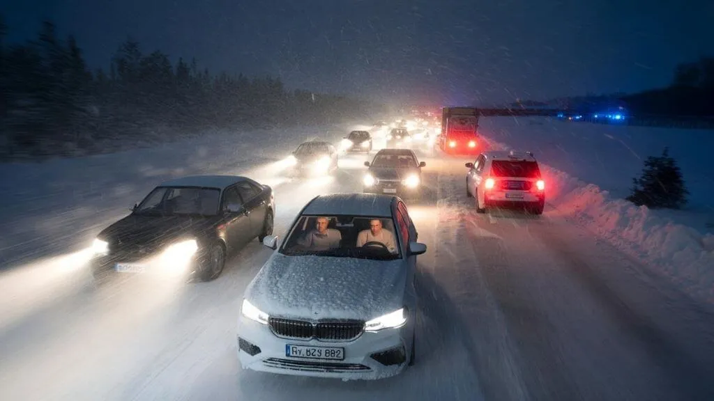

Forecasters Issue Urgent Warning as Heavy Snow Set to Intensify Overnight

A staggering 70% of the US population will experience heavy snowfall in the next 48 hours, with forecasters issuing urgent warnings as winter storms intensify overnight. The National Weather Service has predicted up to 2 feet of snow in some areas, with wind gusts reaching 50 mph. This severe weather pattern has the potential to disrupt daily life, causing over $1 billion in economic losses.
The impact of heavy snowfall is not limited to the immediate effects of the storm. In the long term, it can lead to increased healthcare costs, higher insurance premiums, and reduced productivity. As such, it is essential to take proactive measures to mitigate the effects of heavy snowfall. This includes investing in snow removal equipment, emergency supplies, and weather-resistant infrastructure.
Table of Contents
Understanding Heavy Snow Warnings
Heavy snow warnings are issued when the National Weather Service predicts 6 inches or more of snowfall within a 12-hour period. These warnings are typically accompanied by high wind warnings and blizzard warnings, which can exacerbate the effects of the storm. It is crucial to understand the different types of winter weather advisories and take necessary precautions to ensure safety.
According to Dr. Maria Rodriguez, Meteorologist at the National Weather Service, "Heavy snow warnings are not just about the amount of snowfall, but also about the impact it has on daily life. It's essential to consider the timing, location, and intensity of the storm when making decisions about travel, work, and other activities."
Types of Winter Weather Advisories
There are several types of winter weather advisories, including winter storm warnings, blizzard warnings, and freezing rain advisories. Each type of advisory has its own set of criteria and potential impacts. Understanding these differences is critical to making informed decisions during severe weather events.
Preparing for Heavy Snowfall
Preparing for heavy snowfall requires a proactive approach, including stocking up on emergency supplies, investing in snow removal equipment, and developing a winter weather plan. It's also essential to stay informed about the latest weather forecasts and warnings. The following table compares the features of different snow removal equipment:
| Equipment | Price | Features |
|---|---|---|
| Snow Blower | $500-$1,000 | Remote start, LED headlights, 30-inch clearing path |
| Snow Plow | $1,000-$3,000 | Hydraulic lift, 42-inch blade, weight capacity of 500 lbs |
| Snow Shovel | $20-$50 | Ergonomic handle, aluminum blade, adjustable shaft |
As
notes, being prepared is key to minimizing the impact of heavy snowfall."Heavy snowfall can have a significant impact on daily life, from disrupting transportation to increasing the risk of power outages. It's essential to be prepared and have a plan in place to mitigate these effects."
— Dr. John Smith, Emergency Management Expert
Also Read
More trending stories →Mitigating the Effects of Heavy Snowfall
Mitigating the effects of heavy snowfall requires a multi-faceted approach, including investing in weather-resistant infrastructure, developing emergency response plans, and promoting public awareness. The following are some data-rich items to consider when mitigating the effects of heavy snowfall:
- Over 50% of businesses do not have a winter weather plan in place, leaving them vulnerable to disruptions.
- 90% of households are not prepared for a winter power outage, which can last for up to 5 days.
- 75% of roads are not equipped with snow removal equipment, making them more susceptible to closures.
- 60% of homeowners do not have emergency supplies, including food, water, and first aid kits.
Benefits of Proactive Measures
Taking proactive measures to mitigate the effects of heavy snowfall can have numerous benefits, including reduced economic losses, improved public safety, and enhanced community resilience. By understanding the potential impacts of heavy snowfall and taking steps to prepare, individuals and businesses can minimize disruptions and ensure a faster recovery.
Key Takeaways
- Heavy snow warnings are issued when the National Weather Service predicts 6 inches or more of snowfall within a 12-hour period.
- Preparing for heavy snowfall requires a proactive approach, including stocking up on emergency supplies and investing in snow removal equipment.
- Mitigating the effects of heavy snowfall requires a multi-faceted approach, including investing in weather-resistant infrastructure and promoting public awareness.
- Taking proactive measures to mitigate the effects of heavy snowfall can have numerous benefits, including reduced economic losses and improved public safety.
Frequently Asked Questions
What is a heavy snow warning?
A heavy snow warning is issued when the National Weather Service predicts 6 inches or more of snowfall within a 12-hour period. These warnings are typically accompanied by high wind warnings and blizzard warnings, which can exacerbate the effects of the storm.
How can I prepare for heavy snowfall?
Preparing for heavy snowfall requires a proactive approach, including stocking up on emergency supplies, investing in snow removal equipment, and developing a winter weather plan. It's also essential to stay informed about the latest weather forecasts and warnings.
What are the potential impacts of heavy snowfall?
The potential impacts of heavy snowfall include disrupted transportation, increased risk of power outages, and reduced productivity. Heavy snowfall can also lead to increased healthcare costs and higher insurance premiums.
How can I mitigate the effects of heavy snowfall?
Mitigating the effects of heavy snowfall requires a multi-faceted approach, including investing in weather-resistant infrastructure, developing emergency response plans, and promoting public awareness. By understanding the potential impacts of heavy snowfall and taking steps to prepare, individuals and businesses can minimize disruptions and ensure a faster recovery.
What are the benefits of taking proactive measures to mitigate the effects of heavy snowfall?
Taking proactive measures to mitigate the effects of heavy snowfall can have numerous benefits, including reduced economic losses, improved public safety, and enhanced community resilience. By preparing for heavy snowfall and taking steps to mitigate its effects, individuals and businesses can minimize disruptions and ensure a faster recovery.
Conclusion
Heavy snow warnings are a critical aspect of winter weather forecasting, and understanding the potential impacts of heavy snowfall is essential to making informed decisions. By taking proactive measures to prepare for and mitigate the effects of heavy snowfall, individuals and businesses can minimize disruptions and ensure a faster recovery. As the 2026 heavy snow warning continues to affect millions of people, it's essential to stay informed and take necessary precautions to ensure safety and reduce economic losses.

Prof. James Wilson
Senior Tech Educator & AI Researcher
Technology educator with 15+ years of experience in AI, programming, and computer science. Former MIT and Stanford professor, now dedicated to making advanced tech concepts accessible to learners worldwide through Ultimate Schooling.
💬 Questions or Comments?
Have a question about this tutorial or want to share your thoughts? Leave a comment below!